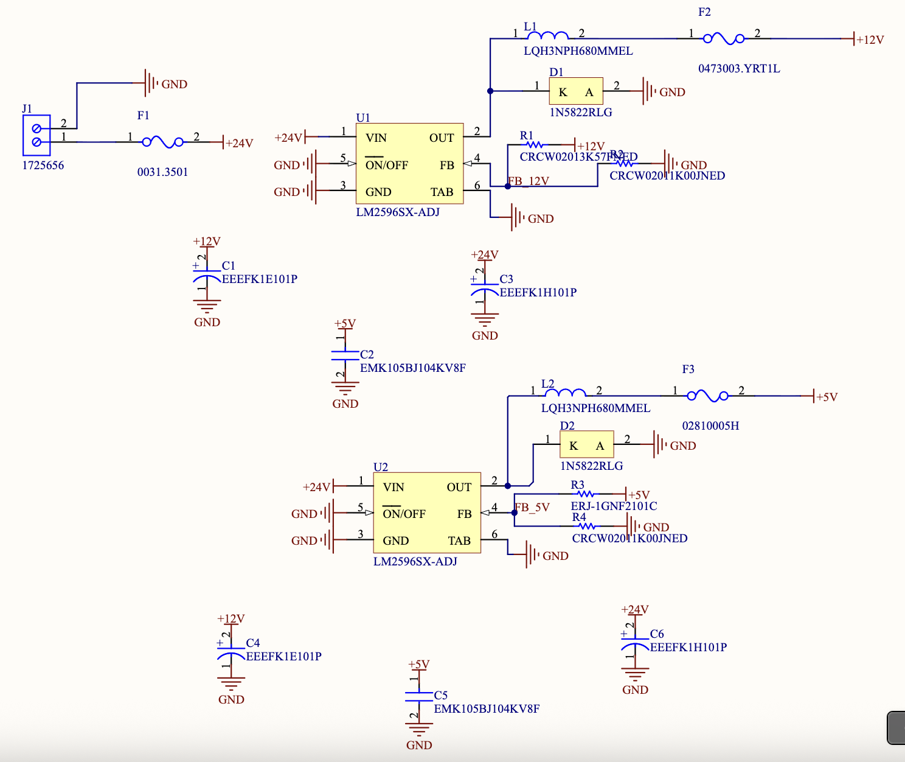
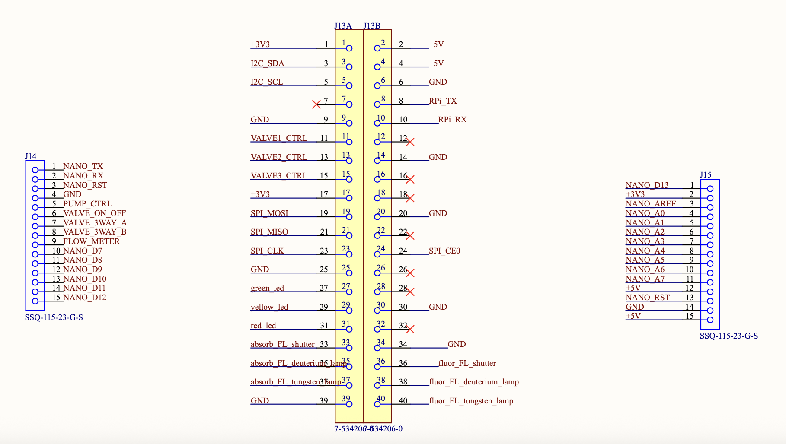
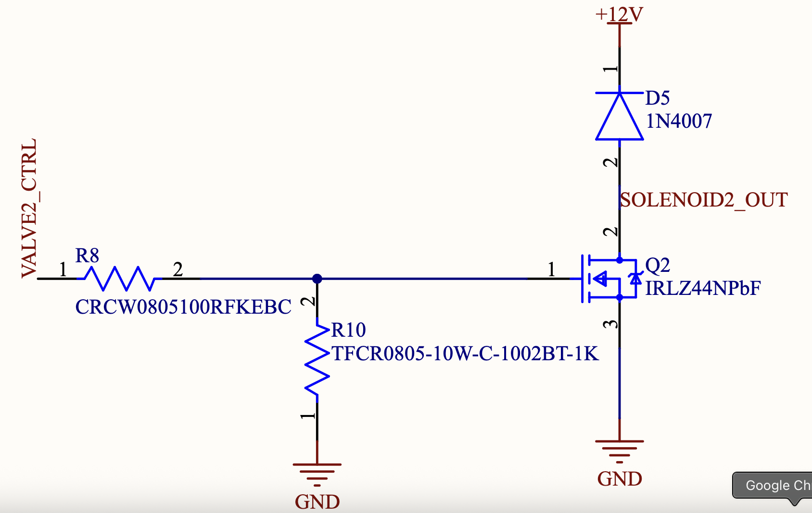
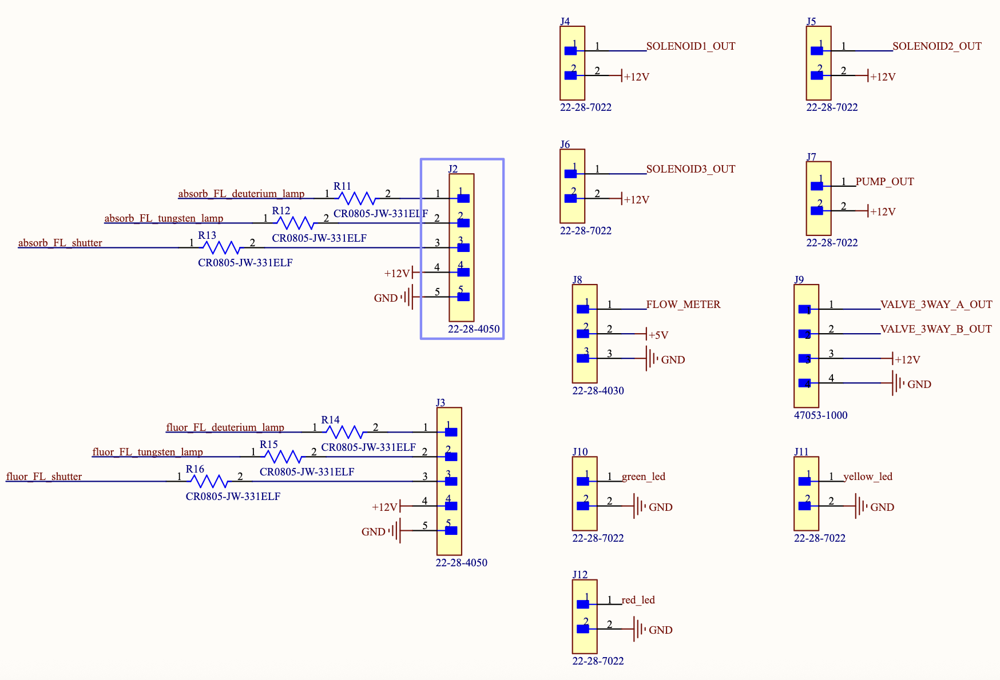
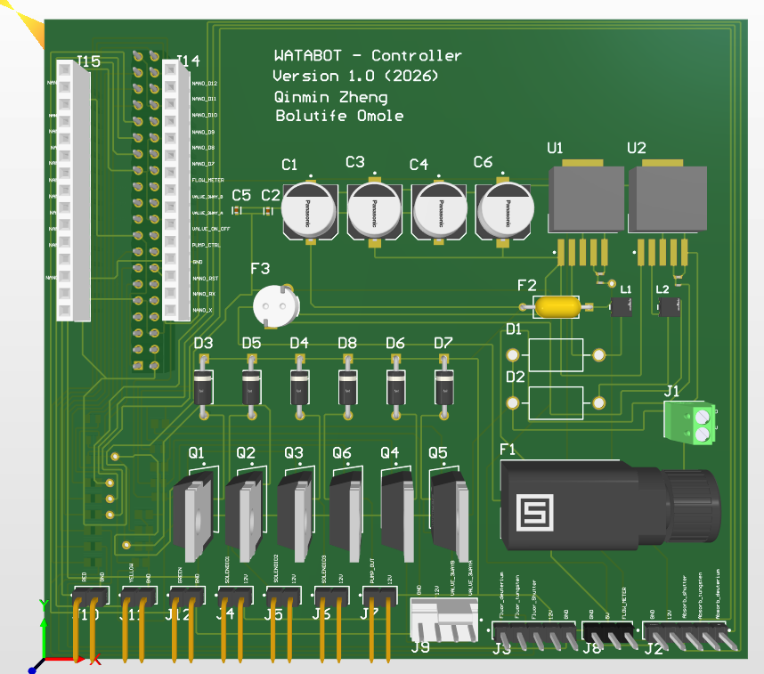

Projects
WATABOT Controller
The device's control electronics were spread across several separate boards connected with jumper wires. I designed one board to replace all of that. The Raspberry Pi and the Arduino Nano plug in through a pair of sockets.
What the board does
I split the schematic into four sheets, one for each part of the job, and this post takes them one at a time. Fig. 1 shows how they fit together: 24 V comes in at the top, two regulators make the lower voltages, the Pi and the Nano decide what should be on, and a row of switches connects each actuator to its power.
Power
The board takes in 24 V through a screw terminal and passes it through a fuse before anything else sees it. Two LM2596 buck regulators, a type of switching regulator that steps a voltage down efficiently, turn that into 12 V and 5 V. The 12 V rail runs the actuators and lamps, and the 5 V rail runs the Pi and the Nano. Each rail also has its own fuse on the output.


MCU headers
This sheet is where the two controllers plug in, the Pi on a 40-pin header and the Nano on two 15-pin sockets. The board powers both of them from its 5 V rail, so neither needs its own supply. The Pi runs the solenoid valves, the status LEDs and the lamp signals. The Nano runs the pump and the 3-way valve, and reads the flow meter.


Switching
A microcontroller pin can't supply the current a solenoid or a pump needs, so six MOSFET switches turn the 12 V actuators on and off, and the Pi or the Nano only has to signal each one. Coils don't like having their current cut suddenly, and they answer with a voltage spike that could damage the switch. Each channel has a flyback diode that gives that current a safe path instead. All six channels are the same circuit, so Fig. 4 shows just one.


Connectors
Everything that leaves the board goes through this sheet: cables to the lamps, the solenoid valves, the 3-way valve, the pump, the flow meter and the panel LEDs. Each device gets its own connector, so any one of them can be unplugged without disturbing the rest. The lamps do their own power switching internally, so the board only sends them on/off and shutter signals, along with 12 V and ground.


Design process
I drew the schematic in Altium as a hierarchy, with a top sheet linking the four sheets above so that each one could be read and checked on its own. From there I laid the board out on two layers, where the 40-pin header, the Nano sockets and six switching channels all have to route past each other. Then came design checks, and finally a fabrication package with the Gerbers, drill files, BOM and pick-and-place data a manufacturer needs. When I handed it off, the design was complete and packaged for fabrication, pending review by my supervisor.


